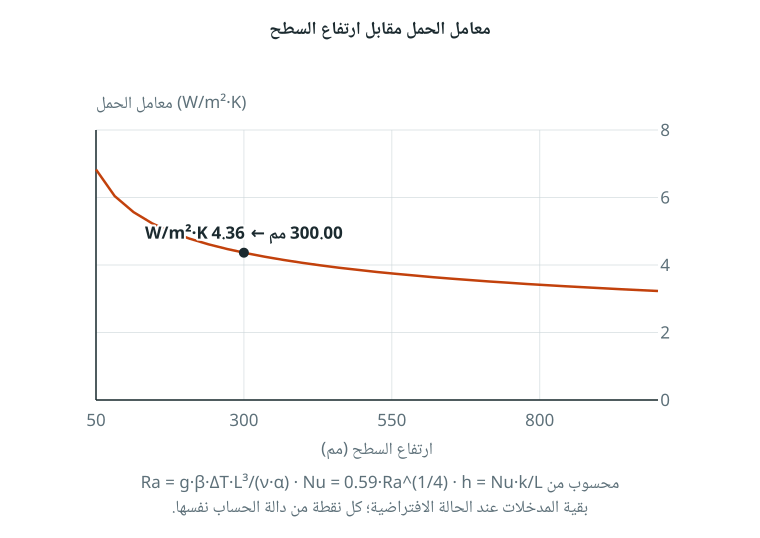

كيف يصعد الهواء الساخن بلا مروحة؟
غيّر فرق الحرارة وارتفاع السطح، وتابع رقم رالي ومعامل الحمل والفيض الحراري.
بداية المقياس على الحالة المرجعية: فرق الحرارة 20.00 ك، ارتفاع السطح 300.00 مم = 87.3 W/m². محاكاة تعليمية لا قياس فيزيائي حقيقي: الأرقام تُحسب من النموذج لحظيًا.
افتراضات النموذج والمصدر
Ra = g·β·ΔT·L³/(ν·α) · Nu = 0.59·Ra^(1/4) · h = Nu·k/L
هواء عند نحو 300 كلفن
صفيحة رأسية مستوية
جريان صفحي: 10^4 < Ra < 10^9
مائع ساكن بعيدًا عن السطح
Heat and Mass Transfer — الحمل الطبيعي والارتباطات التجريبية — Cengel & Ghajar
لا يحتاج الحمل الطبيعي إلى محرّك: التسخين يقلّل كثافة المائع قرب السطح فيطفو، ويأتي مكانه مائع أبرد. قوة الطفو هذه توازنها اللزوجة والانتشار الحراري، والنسبة بينهما هي رقم رالي. كلما كبر رقم رالي اشتدّت حركة المائع وارتفع معامل الحمل، فينقل السطح حرارة أكثر عند فرق الحرارة نفسه.
كيف تعمل الظاهرة؟
الطبقة الملامسة للسطح الساخن تتمدد فتقلّ كثافتها وترتفع، ويحلّ محلها مائع بارد من المحيط. تنشأ طبقة حدّية رقيقة يرتفع فيها المائع على امتداد السطح. سماكة هذه الطبقة تحدد مقاومة نقل الحرارة: طبقة أرقّ تعني تدرّجًا حراريًّا أشدّ ونقلًا أكبر.
العلاقة بالأرقام
المعادلة: Ra = g·β·ΔT·L³/(ν·α) · Nu = 0.59·Ra^(1/4) · h = Nu·k/L. عند فرق الحرارة 20.00 ك، ارتفاع السطح 300.00 مم، يعطي الحساب: رقم رالي = 5.07e+7 ؛ معامل الحمل = 4.36 W/m²·K؛ الفيض الحراري = 87.3 W/m². حالة «سطح قصير» (فرق الحرارة 20.00 ك، ارتفاع السطح 100.00 مم): رقم رالي = 1.88e+6 ؛ معامل الحمل = 5.74 W/m²·K؛ الفيض الحراري = 114.9 W/m². حالة «سطح طويل» (فرق الحرارة 20.00 ك، ارتفاع السطح 1,000.00 مم): رقم رالي = 1.88e+9 ؛ معامل الحمل = 3.23 W/m²·K؛ الفيض الحراري = 64.6 W/m². هذه أمثلة مولدة من دالة الحساب نفسها؛ وليست قياسات فعلية أو مواصفات لجهاز تجاري.
مفاهيم متقاربة
يُخلط بين الحمل الطبيعي والقسري: الأول يحرّكه فرق الكثافة، والثاني مروحة أو مضخة، ورقم رينولدز هو مقياس الثاني. ويُخلط بين رقم رالي ورقم نوسلت: الأول يصف حالة المائع، والثاني نسبة نقل الحرارة بالحمل إلى التوصيل وحده.
حدود التطبيق
الارتباط المستخدم يصلح للجريان الصفحي على صفيحة رأسية في مدى رقم رالي بين عشرة آلاف وعشرة أس للقوة تسعة. خارجه يصير الجريان مضطربًا ويلزم ارتباط آخر. ولا يمثّل السطح الأفقي ولا المحصور بين جدارين، حيث تتغيّر الأطوال المميزة.

| الكمية | القيمة | المصدر |
|---|---|---|
| رقم رالي — الحالة الافتراضية | 5.07e+7 بلا وحدة | [1] |
| معامل الحمل — الحالة الافتراضية | 4.36 W/m²·K | [1] |
| الفيض الحراري — الحالة الافتراضية | 87.3 W/m² | [1] |
المصادر
- 1 Fundamentals of Heat and Mass Transfer — §9.4 ارتباط الصفيحة الرأسية والجريان الصفحي — Incropera & DeWitt. www.wiley.com/en-us/Fundamentals+of+Heat+and+Mass+Transfer-p-9781118989173 · اطُّلع عليه 2026-11-25
- 2 Heat and Mass Transfer — الحمل الطبيعي والارتباطات التجريبية — Cengel & Ghajar. www.mheducation.com/highered/product/heat-and-mass-transfer-cengel-ghajar/M9780073398187.html · اطُّلع عليه 2026-11-25
راجعه: hermes (مراجعة معتمدة 2026-11-26) · 2026-11-26 · آخر تحديث 2026-11-24
رجوع إلى المعمل